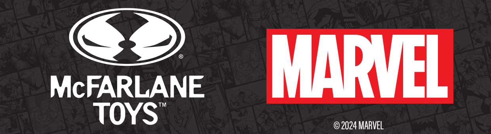
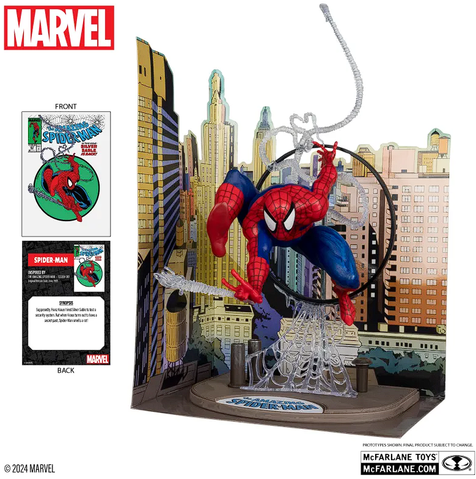

MARVEL AND MCFARLANE TOYS COLLABORATE TO RELEASE ALL-NEW MARVEL COLLECTION

Todd McFarlane’s iconic Marvel artwork will be brought to life in a collection of posed figures, available in both 1:10 and 1:6 scales. It’s a pivotal moment, marking the first time Todd McFarlane, CEO/Founder of McFarlane Toys, will turn some of his own Marvel drawings into stunning 3D detail, offering fans an unparalleled opportunity to own a piece of comic book history.
The 1:10th scale posed figures will celebrate the enduring legacy of Marvel Comics and the legendary artists behind its characters. The inaugural wave features figures inspired by the artistry of Todd McFarlane, Jim Lee, Steve Ditko, John Romita Jr., and Rob Liefeld and showcases iconic characters such as Spider-Man, Wolverine, Iron Man, and Deadpool. Each figure is based upon some of Marvel Comics’ most memorable covers and will be set within an environmental base and includes a diorama backdrop to complete the final presentation.
Additionally, the 1:6th scale figures honor Todd McFarlane’s innovative contributions during his historic tenure at Marvel Comics. The debut figures recreate McFarlane’s Captain America pose from the iconic cover of The Amazing Spider-Man #323 and a Spider-Man figure, also from McFarlane’s classic Amazing Spider-Man run on the title. These figures feature a comic reprint and are mounted on environmental bases with a diorama backdrop,
inviting fans to step into the pages of some of their favorite Marvel adventures.
Iconic The Amazing SpiderMan Issue #300 S1:10th Scale Posed Figure With Comic Book!

The 1:10th scale posed figures will celebrate the enduring legacy of Marvel Comics and the legendary artists behind its characters. The inaugural wave features figures inspired by the artistry of Todd McFarlane, Jim Lee, Steve Ditko, John Romita Sr., and Rob Liefeld and showcases iconic characters such as Spider-Man, Wolverine, Iron Man, and Deadpool. Each figure is based upon some of Marvel Comics’
most memorable covers and will be set within an environmental base and includes a diorama backdrop to complete the final presentation.